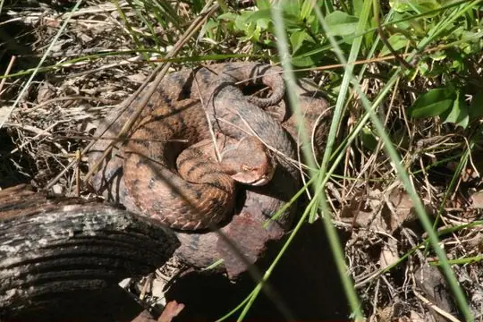
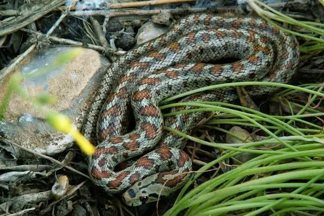
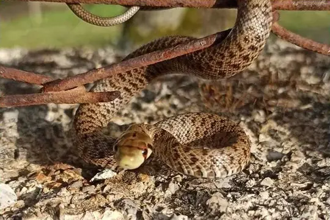

Snakes around Messina
Sicily, Italy · 38.19°N, 15.55°E
Messina is a city in Sicily, Italy. 8 snake species are recorded in Sicily in SnakeList.
- 8species
- 1venomous
- 7non-venomous
- 3families
These are the snakes of Sicily, not of Messina itself. SnakeList records snakes by state or province, not by city, so this page lists the 8 species recorded anywhere in Sicily, the state or province Messina is in (worked out from the city’s map position). Many of them may not live in or near the city.
Most widely recorded
The species here that have research-grade iNaturalist records in the most places across their whole range - not just in Sicily. That shows how often people have photographed them, not how many live here.
 Smooth SnakeCoronella austriaca
Smooth SnakeCoronella austriaca Grass Snake (helvetica)Natrix helvetica
Grass Snake (helvetica)Natrix helvetica
Asp ViperVipera aspis Horseshoe Whip SnakeHemorrhois hippocrepis
Horseshoe Whip SnakeHemorrhois hippocrepis
Leopard SnakeZamenis situla Sand Boa (jaculus)Eryx jaculus
Sand Boa (jaculus)Eryx jaculus
Italian Aesculapian SnakeZamenis lineatus False Smooth Snake (cucullatus)Macroprotodon cucullatus
False Smooth Snake (cucullatus)Macroprotodon cucullatus
Venomous and non-venomous
Venomous: 1Non-venomous: 7
1 is listed by SnakeList as dangerous to people: Asp Viper Vipera aspis.
Snake families
Habitats (rough estimate)
How many of its living snakes have each kind of habitat in SnakeList’s estimate. That estimate comes from every country, state and province where each snake is recorded - not from a survey of Sicily, and not checked species by species.
Who described them
The scientists who first described its most widely recorded snakes, and when.
- Smooth Snake Coronella austriaca -
- Grass Snake (helvetica) Natrix helvetica -
- Asp Viper Vipera aspis -
- Horseshoe Whip Snake Hemorrhois hippocrepis -
- Leopard Snake Zamenis situla -
- Sand Boa (jaculus) Eryx jaculus -
- Italian Aesculapian Snake Zamenis lineatus -
- False Smooth Snake (cucullatus) Macroprotodon cucullatus -
Names and dates come from SnakeList’s reviewed species accounts; the others are looked up on Wikidata (CC0) when this page opens.
Nearby cities
The closest cities in SnakeList’s city list, as the crow flies.
Other cities in Sicily
All 8 species of Sicily
- Asp Viper Vipera aspis venomous
- False Smooth Snake (cucullatus) Macroprotodon cucullatus
- Grass Snake (helvetica) Natrix helvetica
- Horseshoe Whip Snake Hemorrhois hippocrepis
- Italian Aesculapian Snake Zamenis lineatus
- Leopard Snake Zamenis situla
- Sand Boa (jaculus) Eryx jaculus
- Smooth Snake Coronella austriaca
No snake here matches that.